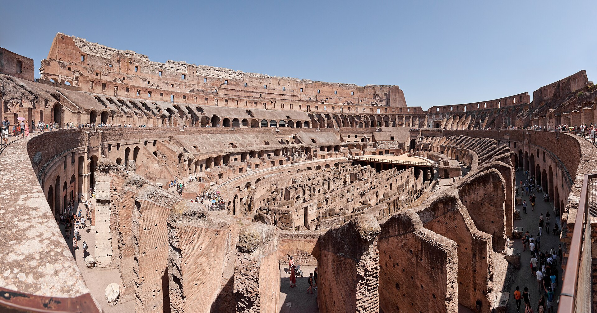
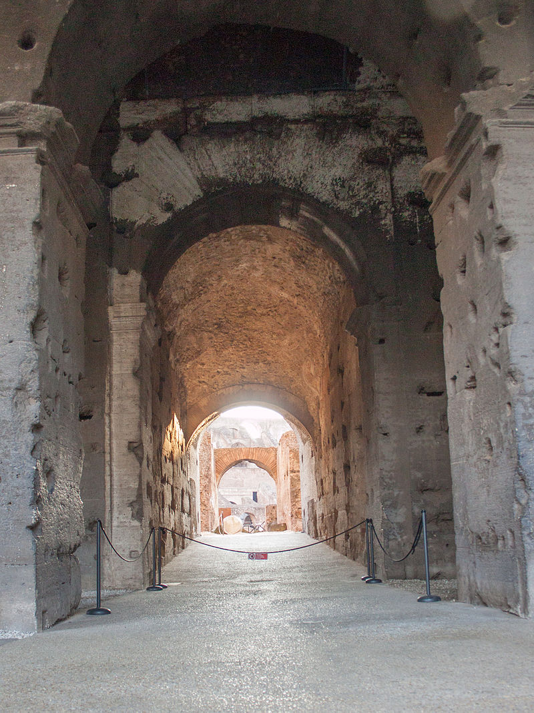
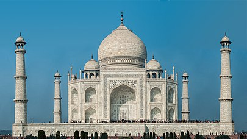
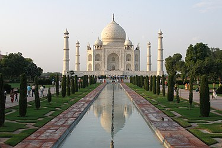
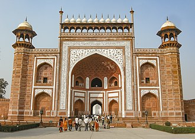
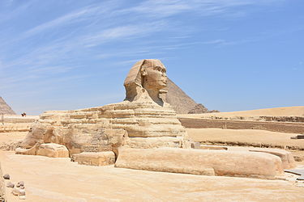
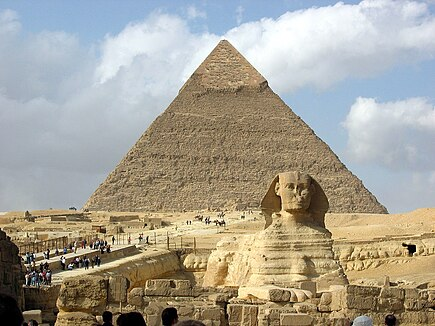
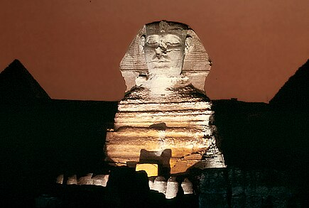

Kolezyum (İtalya)

Tarihi
Kolezyum, traverten kireç taşı, tüf (volkanik kaya) ve tuğla kaplı betondan yapılmıştır. Kolezyum, tarihinin çeşitli noktalarında yaklaşık 50.000 ila 80.000 seyirciyi ağırlayabilmiştir.İmparatorlar burada Roma halkını eğlendirmek ve biraz da kendi eğlenceleri için gladyatör dövüşleri gibi çok acımasız eğlenceler düzenlerlerdi. Bunlardan başka pek çok halk gösterileri, deniz savaşları, hayvan avcılığı, infazlar, meşhur savaşların yeniden canlandırılması, klâsik mitolojiye dayanan dramalar da canlandırılırdı. Kolezyum daha sonra barınma yeri, iş dükkânları, dinî kışlalar, istiham, taş ocağı, Hristiyan türbesi olarak çeşitli amaçlarla kullanıldı. Asıl adı Arena iken sonradan girişteki heykelin adını aldı.
Günümüzde depremden dolayı harap vaziyette olmasına ve taşlarının çalınmasına rağmen Kolezyum, Roma İmparatorluğu'nun uzun zamandan beri ikonik sembolü olarak görülür. Bugün modern Roma'nın en çok turist çeken yerlerinden biridir. 7 Temmuz 2007 tarihinde, Dünya'nın Yeni Yedi Harikası'ndan biri seçildi.Ayrıca Roma Katolik Kilisesi ile yakın bağlantıya sahiptir. Paskalya öncesi Cuma günü Papa amfitiyatroda fener alayı düzenler. Kolezyum'un resmi İtalya'da basılan 5 avro sent bozuk parasının arkasına basılmıştır.
Yapılabilecek Aktiveteler
- Arenayı ve yer altı tünellerini keşfetmek.
- Roma Forumu ve Palatine Tepesi’ni ziyaret ederek çevredeki diğer tarihi alanları görmek.
- Rehberli turlar ile antik Roma kültürünü öğrenmek.
- Fotoğraf çekmek için gün batımı saatlerinde gitmek.
Konumu
Taj Mahal (Hindistan)
Tarihi
Tac Mahal, Hindistan'ın Agra şehrinde, 1631-1654 yıllarında inşa edilmiş anıt mezar.İslam türbe mimarisinin en önemli eserlerinden birisi olarak kabul edilir. Babür İmparatorluğu'nun 5. hükümdarı Şah Cihan'ın 17 Haziran 1631 tarihinde genç yaşta ölen eşi Ercümend Bânû Begüm (Mümtaz Mahal) için o zamanki imparatorluğun başkenti olan Agra'da Yamuna Nehri'nin kıyısında yaptırılmıştır. Mümtaz Mahal'in ve 1666'da ölen imparator Şah Cihan'ın mezarlarını barındırır.Yapı, Şah Cihan'ın hâkimiyeti süresinde en parlak dönemini yaşayan Babürlülerin güç ve kudretini temsil eder. Hanedanın güç ve kudreti kadar, Şah Cihan ile eşi Ercümend Bânû Begüm arasındaki sevginin de sembolüdür.Şah Cihan'ın tahta çıkması üzerine Mümtaz Mahal adını alan Ercümend Bânû, on dördüncü çocuğunu doğururken ölmüştür. Hükümdarın, eşine duyduğu sevginin hatırasına görkemli bir anıt mezar yaptırarak teselliyi sanat ve mimaride bulduğu anlatılır.
Mümtaz Mahal ve Şah Cihan'ın sandukaları üst katta, kubbenin altındadır. Sandukaların bulunduğu yerdeki kubbede insan ağzından çıkan her ses 7 kez yankılanacak şekilde bir akustiğe sahiptir.[kaynak belirtilmeli] Şah'ın ve eşinin asıl lahitleri ise, en alt katta bulunmaktadır.Tac Mahal'in yüz binlerce akik, sedef ve firuze gömülü olan duvarlarında ayrıca 42 zümrüt, 142 yakut, 625 pırlanta ve 50 adet çok iri inci vardır.
Yapılabilecek Aktiveteler
- Gün doğumunda veya batımında fotoğraf çekmek.
- Bahçelerde yürüyüş yaparak huzurlu bir atmosferin tadını çıkarmak.
- Müze ziyaret ederek Babür dönemi mimarisi hakkında bilgi almak.
- Yakındaki Agra Kalesi’ni görmek.
Konumu
Giza Piramitleri ve Sfenks (Mısır)
Tarihi
Büyük Gize Sfenksi, Mısır'ın başkenti Kahire'de, Gize piramitleri bölgesinde yer alan bir sfenks heykelidir.Dünyadaki en büyük tek-taş heykeli olup 73.5 metre uzunluğunda, 6 metre genişliğinde ve 20 metre yüksekliğindedir. Pençelerinin arasında bir tapınak olan ve yatan aslan biçiminde kafası ile bir firavun başı şeklinde olan bir heykeldir.
Aslanlar Antik Mısır mitolojisinde kutsal sayıldıkları için kutsallık ve büyü güçlerini kullanarak firavun mezarlarını ve piramitleri koruması amacıyla inşa edildiği düşünülmektedir. Büyük Gize Sfenks'indeki yüzün Dördüncü Hanedanlık Dönemi'nde, başkent Memphis'te 24 ila 26 yıl hüküm sürdüğü düşünülen 6 Eski Krallık firavunundan biri olan Kefren'in yüzü olduğu tahmin edilmektedir. Yükselen güneşi karşıladığı için Gize Piramitlerinin koruyucusu olduğuna inanılır.
Yapılabilecek Aktiveteler
- Keops Piramidi’ni ve diğer piramitleri keşfetmek.
- Develerle çöl turuna çıkmak.
- Giza Platosu’nda düzenlenen “Işık ve Ses Gösterisi”ni izlemek.
- Antik Mısır tarihine dair daha fazla bilgi için Kahire Müzesi’ni ziyaret etmek.
Konumu